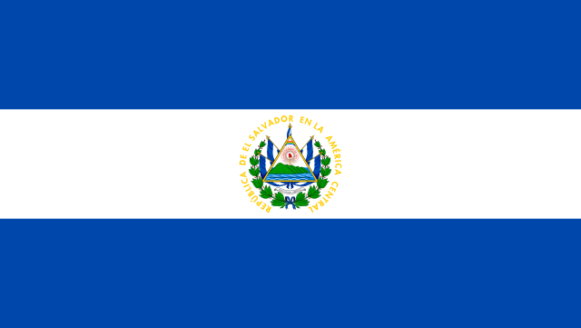
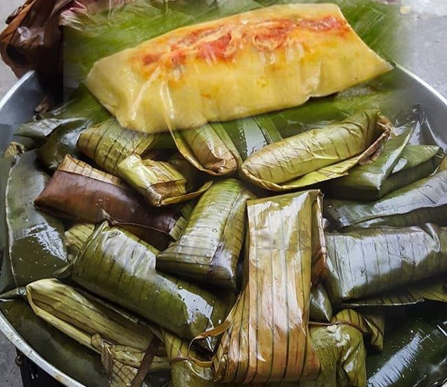
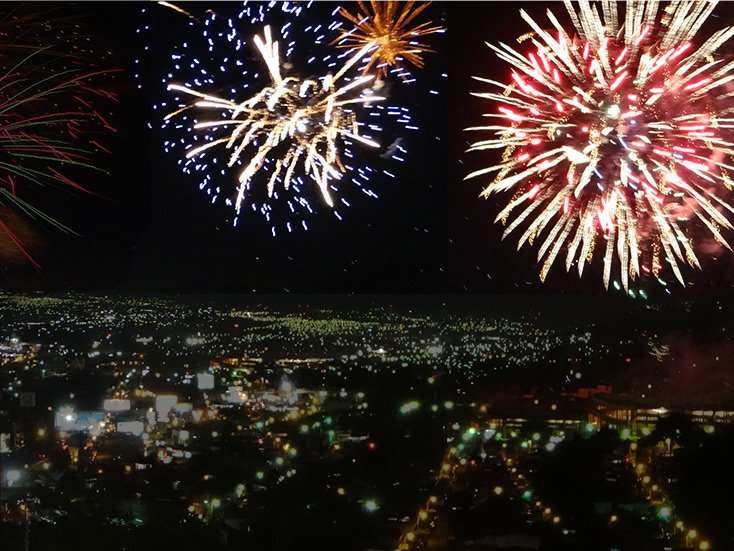
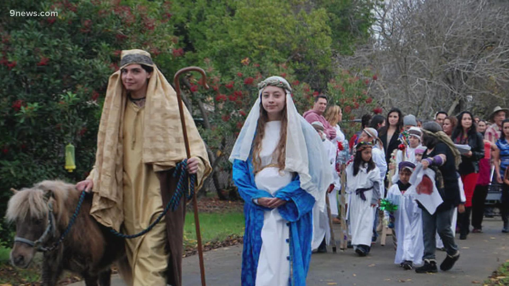

Christmas is a holiday that brings joy, love, and celebration to people around the world. It is a time of giving and receiving gifts, of coming together with loved ones, and of reflecting on the true meaning of the holiday. For many, Christmas is a time to remember the birth of Jesus Christ, who is believed to be the son of God and the savior of humanity. It is a time to focus on the values of love, hope, and kindness, and to spread these values to others. Whether through traditions such as carol singing and gift exchanges, or through acts of generosity and compassion, Christmas is a time to celebrate the goodness in the world and to share it with others. As we approach this special time of year, let us remember the true spirit of Christmas and strive to bring joy and love to those around us.
In El Salvador, Christmas food is an important part of the holiday celebration. Many families and communities come together to share traditional dishes and treats, often preparing special recipes that are passed down through generations. One of the most popular Christmas foods in El Salvador is tamales. These are made with a mixture of masa (corn dough) and fillings such as pork, chicken, or beans, which are wrapped in banana leaves or corn husks and cooked. Other common dishes include ponche, a hot fruit punch made with spices and served with a slice of cheese, and pasteles, a type of savory pie filled with meat or vegetables. Sweets and desserts are also a big part of Christmas in El Salvador. Roscas de pascua, or Easter rolls, are a type of sweet bread that is often served during the holiday season. They are made with butter, sugar, and eggs, and are decorated with colorful sprinkles and candied fruits. Other popular treats include manzanas locas, or crazy apples, which are apples covered in caramel and rolled in nuts or coconut, and dulce de leche, a caramel-like sauce made with milk and sugar. Other foods include: lomo relleno, dulce de leche, pan con pollo, pupusas and ponche.
Christmas parties are a popular tradition in El Salvador, with many families and communities coming together to celebrate the holiday season. These parties often involve food, music, dancing, and gift exchanges. One common type of Christmas party in El Salvador is the "posada". These parties reenact Mary and Joseph's search for a place to stay, with participants dressing up as the biblical characters and going from house to house singing traditional songs and asking for lodging. When they finally reach the designated "inn," they are greeted with a feast and celebrations. Another popular type of Christmas party in El Salvador is the "Nochebuena," or Christmas Eve party. This is typically a big family gathering, with a feast of traditional dishes.
Finding a new outfit is a must for the holiday season. A few days before the celebrations start, it is common for people to purchase new clothes to make their holiday outfit special. Many people wear these clothes to go to work or wear them during the first days of the school year in January. Salvadorans celebrate Christmas on December 24th at midnight. Therefore, going to the beach on Christmas Day is a popular tradition for Salvadorans to continue the Christmas festivities. Salvadorans love to dance, and most of them take this opportunity to show their dancing moves to family and friends. It is typical for Salvadoran households to play classical dancing Christmas songs throughout the night. The following song by Los Hermanos Flores is a popular song among Salvadorans.
The Christmas Holidays bring a sense of community to El Salvador. During this holiday, members of communities or neighborhoods go the extra mile to be more inclusive of each other. For instance, many people in these communities give away traditional foods they have prepared to neighbors as gifts. Additionally, at midnight on the 24th, after the customary hug has been shared among family members, people go into the street, hug neighbors, and wish them a merry Christmas. Although this tradition is in decline, it is still visible, especially in smaller municipalities. Embracing others in the community during Christmas is a pleasant Salvadoran tradition worth doing. Fireworks are a big part of Christmas in El Salvador; these fireworks are set off at any point during December. The country has almost no restrictions when it comes to lighting fireworks.